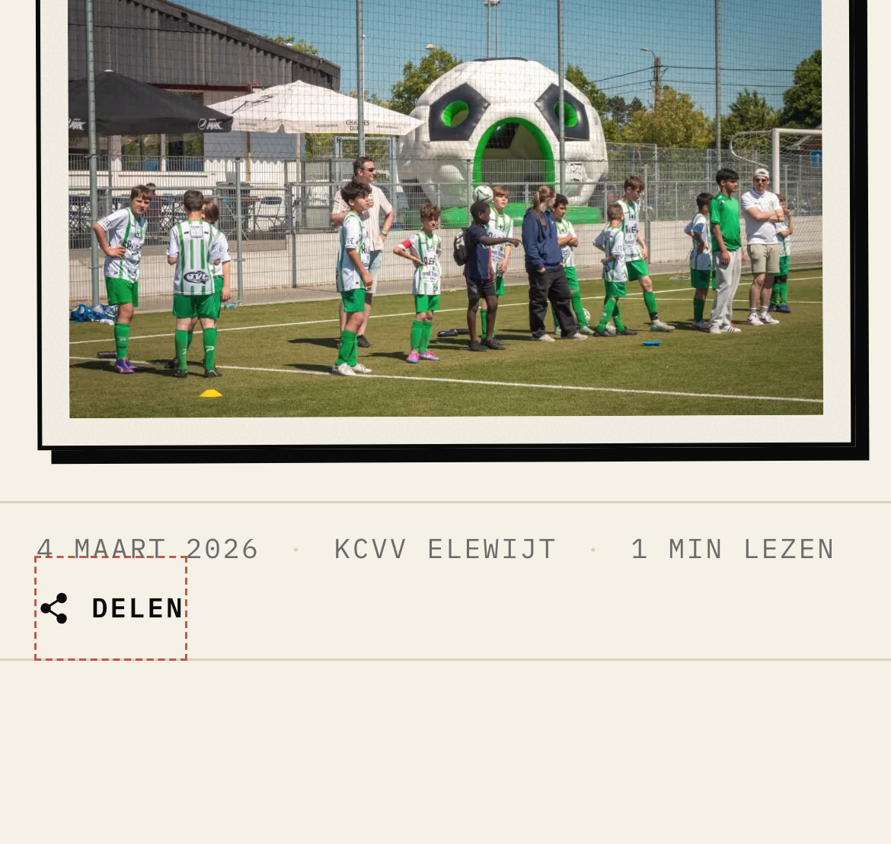
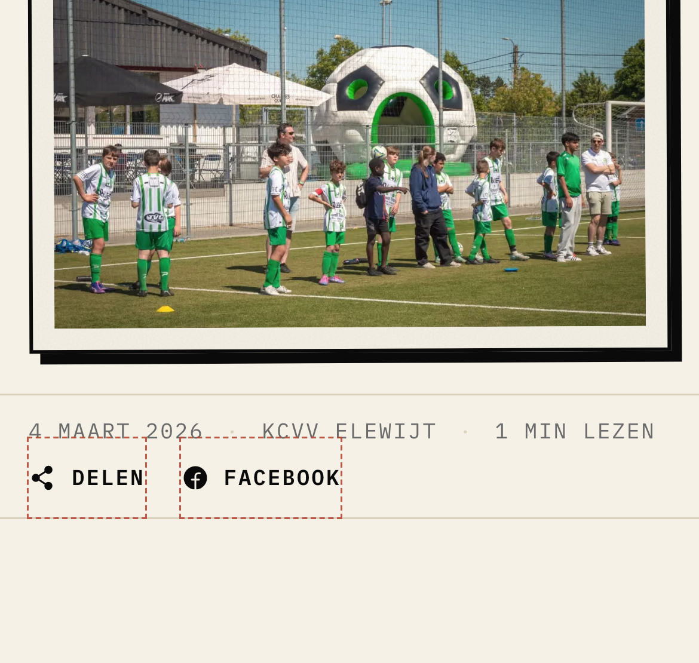
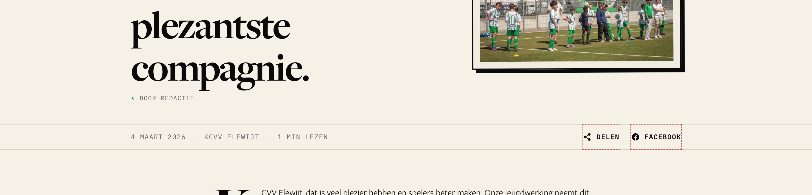

Article share buttons, and the tap-size rule
Screenshots of a live article, rebuilt in the browser per option. The red dashed box is the area a finger can hit — drawn only to show it, it does not ship. Ticket #2529.
Two 16px icons, no words
The only two controls on an article. A thumb is about 44px wide; these are 16px. An older supporter may not know the share icon.
- They do the same thing for many people. On a computer whose browser cannot share (Chrome and Firefox on Mac),
Delenalready opens Facebook — exactly what the Facebook icon does. On a phone,Delenopens the phone's own share menu, which already lists WhatsApp, Facebook and Messenger.
One button: “Delen”
Icon plus the word, in the same small caps as the date line. Hit area 44px tall. The Facebook icon goes.

- One control, one word. Nothing to recognise.
- Nobody loses Facebook on a phone — it is in the share menu.
- Safari on a Mac and Edge on Windows open the system share menu, which may not list Facebook. Those few lose the one-click Facebook path.
Two buttons: “Delen” + “Facebook”
Both get a word and a 44px hit area.

- Keeps a direct Facebook path on every computer.
- Two buttons that do the same thing for most visitors.
Option 2 on a computer (Option 1 is the same, minus “Facebook”)

Measured on the live article page
| What | Today | Below 24px? |
|---|---|---|
| Phone header: menu, search icons | 44 × 44 | no |
| Footer links | 27 tall | no |
| Desktop header links | 39 tall | no |
| Up-link chip “Nieuws” | 32 tall | no |
| Share icons | 16 × 16 | yes |
| Desktop search icon | 18 × 18 | yes |
- Every text link already clears 24px (fixed in #2394). The only offenders are icon-only controls — and the phone header already gives its icons 44 × 44.
- Proposed rule: an icon-only control gets a 44 × 44 hit area; a text link gets at least 24px of height. A control that stands alone shows a word, not just an icon.
- Why 44 for icons: a thumb pad is ~44px on a phone held at the pitch, and an icon gives no text to aim at. Why 24 is enough for text links: the words themselves are the target, and they sit in lists where 44 each would stretch the footer by ~320px on a phone.